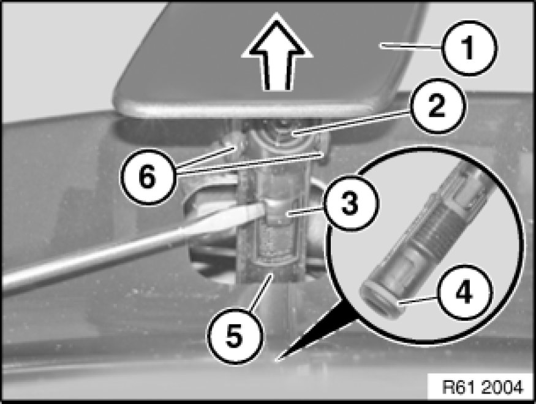

Removing and Installing/Replacing Spray Nozzles (Nozzle Heads) of Headlight Washer System on Left or Right (M/Aerodynamic Kit)
61 67 075 - Removing and installing/replacing spray nozzles (nozzle heads) of headlight washer system on left or right (M / aerodynamic kit)

Note:
Catch any escaping washer fluid if necessary.
Raise cover for headlight washer system (1) with nozzle head (2) in direction of arrow.
Important!
Risk of damage!
When releasing retaining lug (3), grip housing of high-pressure nozzle (5) and then allow to slide back slowly.
Unlock retaining lug (3) with a suitable tool.
Remove cover for headlight washer system (1) with nozzle head (2) from high-pressure nozzle housing (5).
Release cover for headlight washer system (1) at attachment points (6) from nozzle head (2).
Installation:
Make sure sealing ring (4) is correctly fitted on nozzle head (2).
Nozzle head (2) must engage audibly on high-pressure nozzle housing (5).
If necessary, top up washer fluid.